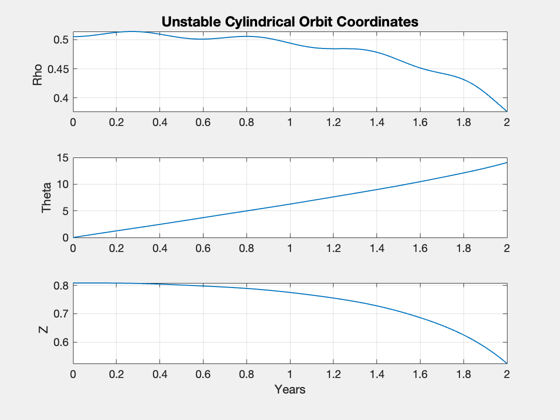
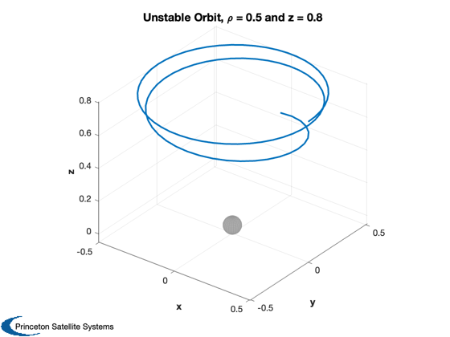
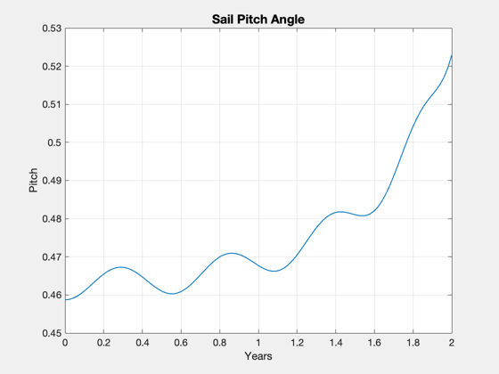
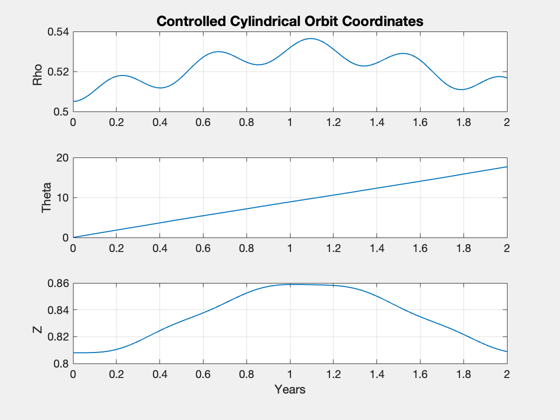
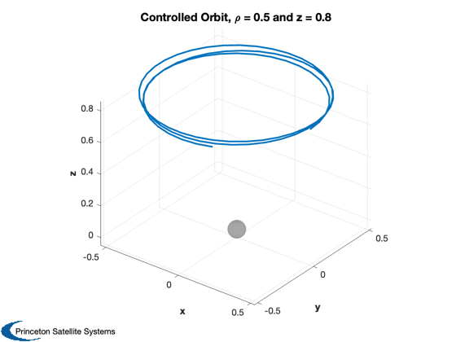
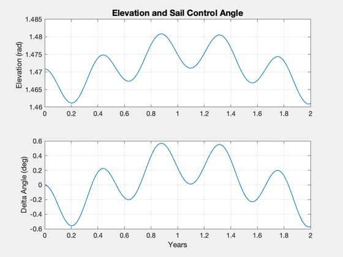

Simulate a non-Keplerian sail orbit in a cylindrical sun-centered frame.
The sail enables a displaced orbit above the ecliptic plane.
Initially the sail elevation angle is fixed, resulting in an unstable orbit. Then, the sail pitch angle is fixed instead, resulting in a stable oscillation.
------------------------------------------------------------------------
Reference: Colin R. McInnes, "Solar Sailing: Technology, Dynamics and Mission
Applications", Springer Praxis, London, 1999, Fig. 5.7 p. 186 and
Fig. 5.9 on p. 191.
------------------------------------------------------------------------
See also Constant, InformDlg, Plot2D, Plot3D, NonKeplerianSun,
FRotatingSun
------------------------------------------------------------------------
Contents
%------------------------------------------------------------------------------- % Copyright (c) 2007 Princeton Satellite Systems, Inc. % All rights reserved. % Since version 7. %-------------------------------------------------------------------------------
Orbital and sim parameters
rho0 = 0.5; % radius of orbit, AU z0 = 0.8; % out-of-plane displacement, AU % Initial conditions r0 = [rho0;0;z0]; dR = 0.01*r0; w0 = 1; % Target an Earth-synchronous period mu = Constant('mu sun'); au = Constant('au'); omega = sqrt(mu/au^3); [pitch0,beta] = NonKeplerianSun( rho0*au, z0*au, omega ) elevation0 = atan( z0/rho0 ) + pitch0; % ODE options opts = odeset('abstol',1e-12,'reltol',1e-8);
pitch0 =
0.4587
beta =
1.0601
Control elevation angle to a constant value
(fixed sail attitude in rotating frame)
%-------------------------------------------- % Time, 1/2pi years nOrb = 2; t = linspace(0,nOrb*2*pi,100); hDlg = InformDlg( 'Integrating...', 'NonKeplerSunSim' ); [tOut,z] = ode113( @FRotatingSun, t, [r0+dR;0;w0;0], opts, elevation0, beta, 2 ); close(hDlg); % Time histories of cylindrical state vector years = tOut'/2/pi; Plot2D(years,z(:,1:3)','Years',{'Rho','Theta','Z'},'Unstable Cylindrical Orbit Coordinates'); % View in 3D (Cartesian) theta = z(:,2)'; c = cos(theta); s = sin(theta); rX = z(:,1)'.*c; rY = z(:,1)'.*s; Plot3D([rX;rY;z(:,3)'],[],[],[],'Unstable Orbit, \rho = 0.5 and z = 0.8',0.05) axis tight % Actual sail pitch angle pitch = elevation0 - atan( z(:,3)' ./ z(:,1)' ); Plot2D(years,pitch,'Years','Pitch','Sail Pitch Angle');  
Control pitch angle to be constant
(changing sail attitude)
%-------------------------------------------- nOrb = 3; t = linspace(0,nOrb*2*pi,100); [tOut,z] = ode113( @FRotatingSun, t, [r0+dR;0;w0;0], opts, pitch0, beta, 1 ); % Verify cylindrical coordinates Plot2D(years,z(:,1:3)','Years',{'Rho','Theta','Z'},'Controlled Cylindrical Orbit Coordinates'); % View in 3D (Cartesian) theta = z(:,2)'; c = cos(theta); s = sin(theta); rX = z(:,1)'.*c; rY = z(:,1)'.*s; Plot3D([rX;rY;z(:,3)'],[],[],[],'Controlled Orbit, \rho = 0.5 and z = 0.8',0.05) elevation = pitch0 + atan( z(:,3)' ./ z(:,1)' ); Plot2D(years,[elevation;(elevation-elevation0)*180/pi],'Years',... {'Elevation (rad)','Delta Angle (deg)'},'Elevation and Sail Control Angle'); %-------------------------------------- % PSS internal file version information %-------------------------------------- % $Id: 2201294295d38d1d3699dc5e5907b8d087a4e5f0 $  